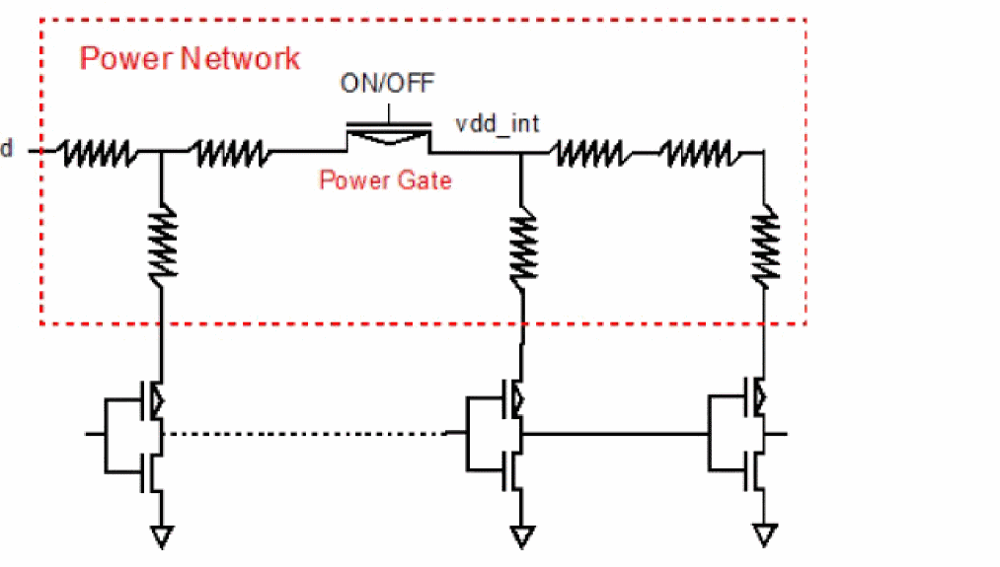
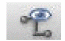
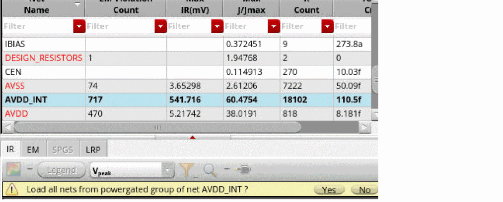

Loading and Viewing Nets from a Power Gate Group
Power networks may contain power gates which enable or disable the power supply in the circuit. These power gates split the power supply RC network into two parts. The RC network driving the power gate, and the RC network being driven by the power gate. This is shown in the figure below. The Voltus-XFi EM-IR analysis can handle such power gates.

Both, the power supply net (vdd) driving the power gates, and the internal power supply net (vdd_int) driven by the power gates, need to be grouped in the Setup – Power Nets tab of the tungsten view.
When you select a net that is part of power-gated group of nets, you can either load all the nets of that group or just the selected net. To load and view a power gate group:
-
Select any net that is part of a power gate group of nets in the Net Summary (top) section and click Load Nets.
.
A confirmation message appears asking you if you want to load all nets of a power gate group or only the selected net.
 - Click Yes to load all nets.
- Click Plot Results.
- Right-click the column header to select the Net Name column and view the net to which the node or resistor belongs.
Related Topics
- Viewing EM-IR Analysis Results
- Visualizing EM-IR Analysis Results using Voltus-XFi Results Browser
- Querying Specific Areas and Shapes in the Layout for Node/Resistor Information
Return to top